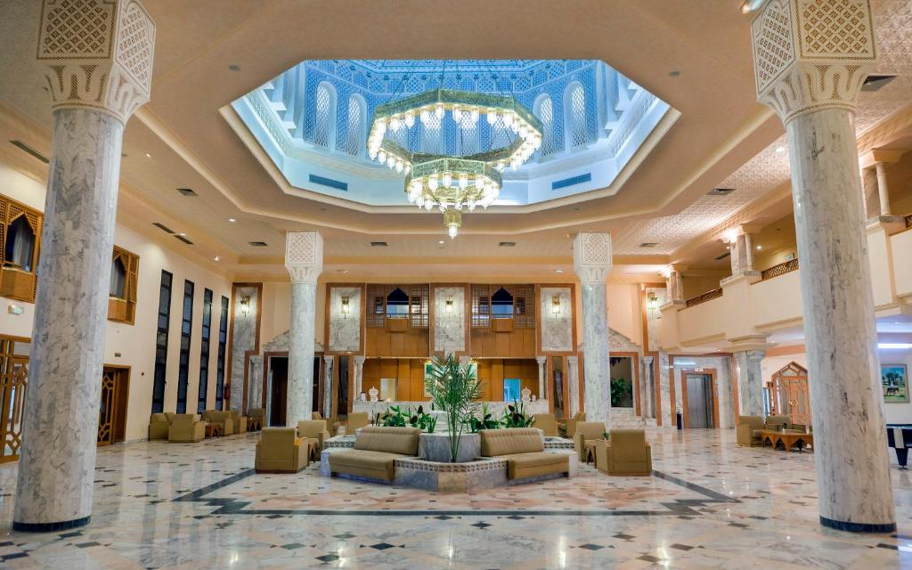

Douz : 7 établissements trouvés
|  | El Mouradi DouzBP 155, 4260 Douz, Tunisie Grandes dunes de sable, vastes étendues, magie du Sahara tunisien : c’est à tout cela que vous invite El Mouradi Douz. Situé à une centaine de kilomètres des sites les plus dépaysant du Grand Sud Tunisien (Tozeur, Matmata, Ksar Ghilène…), El Mouradi Douz est idéal pour des vacances originales alliant évasion et détente. |
Note 7.0 109 expériences vécues |
| Tarif dès 136 TND par nuit Vérifier la disponibilité |
 |
Camp MarsSitué sur la colline de Timbaine, le Camp Mars propose un hébergement en tentes traditionnelles offrant une vue sur les dunes de sable, des visites guidées et des excursions dans le désert. Tous les hébergements de l'établissement sont dotés d'équipements de base et d'un accès à une salle de bains commune comprenant des toilettes. Un petit-déjeuner buffet est préparé tous les matins sur place et vous pourrez déguster des plats locaux faits maison au sein du restaurant. |
Note 8.7 86 expériences vécues |
| Tarif dès 502 TND par nuit Vérifier la disponibilité |
Grand Sud, la maison de sable0,6 km du centre Situé à Douz, à 5 km de la grande dune de Douz, le Grand Sud, la maison de sable propose un salon commun, un jardin, un barbecue et un parking privé gratuit. L’établissement est également doté de chambres familiales et d’une terrasse bien exposée. La connexion Wi-Fi est gratuite et vous aurez accès à une cuisine commune. Les chambres de cette maison d’hôtes comprennent une salle de bains privative. Le Grand Sud, la maison de sable sert un petit-déjeuner continental ou à la carte. |
Note 8.8 19 expériences vécues | |
| Tarif dès 131 TND par nuit Vérifier la disponibilité |
 |
TENTE ELBEY0,6 km du centre Situé à Douz, à 10 km de la grande dune de Douz, le TENTE ELBEY propose un hébergement avec un restaurant, un parking privé gratuit et un jardin. Il propose une réception ouverte 24h/24 et un service d'étage. Toutes les chambres du complexe sont dotées d'une terrasse avec vue sur le jardin. Chaque chambre du TENTE ELBEY est équipée d'un bureau et d'une salle de bains privative. Un petit-déjeuner continental est servi tous les matins sur place. |
Note 8.7 4 expériences vécues |
| Tarif dès 394 TND par nuit Vérifier la disponibilité |
sahara project